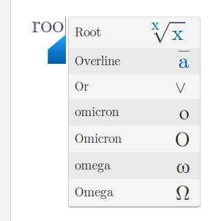

Welcome to The Mathist Help Center
Here you will find information about all the things you can do in The Mathist. However, if you still have questions, please let us know at contact@themathist.com. We will be very happy to talk with you!
- The Mathist Team
Getting Started
Creating Notes
When you log in, you will se a screen representing the folder structure of your Google Drive. Navigate to a folder you wish to create a note in and then in the upper left click the New Note button.
Saving Notes
When you are inside the editor, your notes are being automatically saved to your Google Drive every few seconds. There is no special action to perform in order to save your note. Ah yes, the beautiy of Google Drive!
Deleting Notes
If you are in the editor, click the Home button in the upper left corner. Once you can see the notes in your Google Drive on the home screen, click on the little trash can icon next to the title of the note in order to delete it. If you are sure, confirm your choice in the confirmation dialog.
Searching Notes
If you are like us, you write a LOT of mathematical notes. So if you need to find a note in a folder with lots of other folders or notes in it, just start typing the title of your note in the search field in the top-right corner of the screen. To reset the search, delete what you have typed in the search box.
Printing Notes
When you are inside the editor, click on the Print button in the top toolbar to print your note. This feature is really usefult because you can also export your notes to PDF this way. Here is a screenshot showing where the print button is:

Writing Formulas
Moving the Cursor Around
In the editor you can use the arrow keys to move the cursor left-right and up and down through the note, just like in any other text editor. There is one difference - mathematical expressions that are a little more complex, like for example fractions, can have more than one place where you can put the cursor inside them.
You can also use your home and end keys to jump to the beginning and the end of the line. On Mac, the key combination for this is command + left or Command + Right.
Keyboard Shortcuts
Here is a table showing the most important keyboard shortucts to speed up your writing.
| Keyboard shortcut | Action |
|---|---|
| / - forward slash | FractionsIf there is a group of numbers or a letter before the cursor, it becomes the numerator of the fraction and the cursor is moved to the nominator of the fraction automatically. Otherwise an empty fraction is created and the cursor is placed in the numerator. |
| ^ - cap | Exponent or SuperscriptIf there is a group of numbers or a letter before the cursor we put an exponent on it. If there is a root or a fraction before the cursor, we first put it in brackets and then put the exponent on the brackets. |
| _ - underscore | SubscriptIf there is a group of numbers or a letter before the cursor we put a subscript on it. |
Finding All Formulas
As you start typing in The Mathist, you will notice a list of formulas appear at your cursor. This is the autocomplete list, it offers quick access to all the various mathematical expressions you can write in The Mathist. Let's use an example to illustrate how it works:
- Let's say that you want to write root of 3.
- Start typing " roo"
-
After a second you will see a list of suggestions show up under your cursor like this:
 - You can use the down arrow to select the Root symbol from the list, and then press enter. You can also click with the mouse.
- After you've selected, the letters " roo" will get replaced by the actual root symbol, and your cursor will be placed inside the root expression.
- The Mathist will always list all the expressions that match your last typed letters. We see here all the expressions that begin with the letter "O" are also listed.
Here is a complete list of all mathematical expression The Mathist currently supports. Just start typing any of them, and the autocomplete will suggest them to you.
Punctuation
- Space
- Line break
- Comma
- Full stop
- Question mark
- Colon
- Semicolon
- Overline
- Underline
- Right arrow
Brackets
- Round brackets
- Straight brackets
- Square brackets
- Curly brackets
- Angle brackets
Sets
- Subset
- Superset
- Subset or equal
- Superset or equal
- Intersection
- Union
- Member
- Not member
- Empty set
Trigonometry
- Sine
- Arcus sine
- Cosine
- Arcus cosine
- Tangent
- Arcus tangent
- Cotangent
- Arcus cotangent
Algebra
- Fraction
- Root
- Matrix
- Summation
- Product
- Logarithm
- Vector
- Equal
- Not equal
- Similar
- Not similar
- Similar or equal
- Not similar or equal
- Congruent
- Not congruent
- Less than
- Much less than
- Greater or equal
- Less or equal
- Equivalent
- Plus
- Plus-minus
- Minus
- Minus-plus
- Times
- Dot
- Proportional
- Percent
- Divides
- Does not divide
Logic
- Not
- And
- Or
- Exclusive or
- Implication
- Equivalence
- Therefore
- Because
- For all
- Exists
- Does not exist
- True
- False
- Provable
Calculus
- Integral
- Double integral
- Tripple integral
- Closed contour integral
- Closed surface integral
- Closed volume integral
- Limit
- Infinity
- Derivative
- Partial derivative
- Nabla
The On-Screen Keyboard
If you are using The Mathist on a touch screen device, you will want to use the on-screen keyboard. You can access the keyboard by clicking on the icon in the lower right corner of the note.

Exporting to LaTeX
The Mathist is extremely convenient for quickly inputing mathematical formulas and writing drafts of your papers. But when you want to take your work to the LaTeX environment for publishing, The Mathist will give you a way to export your formulas. The following gif shows how the LaTeX export works.
Working with Images
The Mathist allows you to upload an image into your note. It is as simple as clicking the image button in the top toolbar. You can also resize the images by hovering your mouse over them and dragging the corners.
Cool Stuff
Using Wolfram | Alpha
With The Mathist you can easily do computations, find solutions to equations, plot graphs and numberlines, find out about facts and so much more using the Wolfram | Alpha integration. Here is a short gif to show you how it works.
The beauty of Wolfram | Alpha is that you can just ask questions in natural language, and it will understand and provide you with the results. Here are some of the ideas how we use it:
- Ask about facts, for example: "What is the speed of light?"
- Convert different units, like shown in the example above.
- Select an equation, and have it solved.
- Select a fraction or a root, hit the lightbulb button, and have the numeric value computed for you.
- Select a mathematical expression and have it simplified, or get alternative representations.
- Type something like: "Value of PI" to get information such as: where is it on the number line, what is the decimal approximation, what is the series expansion, etc...
Using Desmos Calculator
We all know and love Desmos. You can add many desmos calculators inside The Mathist note, to better illustrate your point. Just click the Desmos icon in the top toolbar, and a new desmos calculator will be added right inside your note!
Using Geogebra
Geogebra has a huge library of publicly available interactive materials about many different topics like geometry, algebra, calculus... You can insert a Geogebra material right inside your note. First you click the Geogebra logo in the top toolbar. Then you type in what you are searching for and after the results have loaded you can choose which one you'd like to add to your note. Here is a small giff showing how it works: